4.7 Population analysis and atomic charge calculation¶
Multiwfn manual, p.563–599. Images:
../imgs/.
4.7 Population analysis and atomic charge calculation¶
4.7.0 Mulliken population analysis on triplet ethanol¶
In this section I will illustrate how to use Multiwfn to carry out Mulliken analysis, triplet ethanol is taken as instance. It is worth to note that Mulliken analysis is incompatible with diffuse functions, if diffuse functions are employed, the analysis result will be meaningless.
Boot up Multiwfn and input examples\ethanol_triplet.fch // Calculated at UB3LYP/6-31G** level based on optimized singlet structure
Multiwfn session
- 7 — Population analysis and atomic charges
- 5 — Mulliken population analysis
- 1 — Output Mulliken analysis result. By default, the result is outputted on screen, you can also select "-1 Choose output destination for option 1" to change the output destination to a specified plain text file
From the output, first you can find population of each basis function:
Population of basis functions:
Basis Type Atom Shell Alpha pop. Beta pop. Total pop. Spin pop.
1 S 1(C ) 1 0.99597 0.99597 1.99193 -0.00000
2 S 1(C ) 2 0.34180 0.34330 0.68510 -0.00150
3 X 1(C ) 3 0.34747 0.35290 0.70037 -0.00543
4 Y 1(C ) 3 0.34869 0.35220 0.70088 -0.00351
...
60 Z 8(O ) 30 0.64840 0.09113 0.73953 0.55726
61 S 8(O ) 31 0.30323 0.47550 0.77873 -0.17228
...
Since present system is an open-shell system, not only the total population (i.e. alpha+beta), but also alpha and beta populations are outputted individually. The spin populations, which equal to difference between alpha and beta populations, are also printed. The output content is easy to understand, for example, from the output we can see that there are nearly two electrons located on the first S basis function of C1 atom, and one of PZ basis functions of O8 atom has a large amount of unpaired electrons (0.557).
Next, we can find population of each basis function shell of each atom:
Population of shells:
Shell Type Atom Alpha pop. Beta pop. Total pop. Spin pop.
1 S 1(C ) 0.99597 0.99597 1.99193 -0.00000
2 S 1(C ) 0.34180 0.34330 0.68510 -0.00150
3 P 1(C ) 1.05533 1.06504 2.12037 -0.00971
4 S 1(C ) 0.30449 0.30842 0.61291 -0.00393
...
28 S 8(O ) 0.99668 0.99637 1.99305 0.00032
29 S 8(O ) 0.51929 0.45809 0.97739 0.06120
...
As you can see, for example, the basis function shell 30, which corresponds to one of P shells of O8, has unpaired electrons of 0.648 and total population of 2.777.
Next, you can find population of each angular moment atomic orbitals of each atom:
Population of each type of angular moment atomic orbitals:
Atom Type Alpha pop. Beta pop. Total pop. Spin pop.
...
8(O ) s 1.81920 1.92996 3.74916 -0.11076
p 2.49431 1.65216 4.14647 0.84216
d 0.00748 0.00607 0.01355 0.00142
...
Total s 8.35987 7.42761 15.78748 0.93226
p 5.61927 4.56478 10.18405 1.05448
d 0.02087 0.00761 0.02847 0.01326
The output shows that atomic orbitals of d type only have marginal contribution to total population (0.02847) and spin population (0.01326) of the whole system, since basis functions of D type only behave as polarization functions for present system. In O8, most unpaired alpha electrons are located on its p atomic orbitals, while slight unpaired beta electrons are distributed on its s atomic orbitals (positive and negative value indicate that the unpaired electrons are alpha and beta, respectively).
Finally, we can find atomic populations and atomic charges:
Population of atoms:
Atom Alpha pop. Beta pop. Spin pop. Atomic charge
1(C ) 3.15460 3.16849 -0.01388 -0.32309
2(H ) 0.43857 0.43159 0.00698 0.12984
3(H ) 0.43857 0.43159 0.00698 0.12984
4(H ) 0.46846 0.43410 0.03437 0.09744
5(C ) 3.13963 2.95977 0.17986 -0.09940
6(H ) 0.49613 0.36169 0.13444 0.14218
7(H ) 0.49613 0.36169 0.13444 0.14218
8(O ) 4.32100 3.58819 0.73281 0.09082
9(H ) 1.04690 0.26289 0.78401 -0.30979
Total net charge: -0.00000 Total spin electrons: 2.00000
Triplet system has two unpaired electrons, one can see that in the triplet ethanol, most unpaired electrons (more than 1.5) are located on the hydroxyl group. It is well known that in ground state ethanol, the oxygen atom should have significant negative charge due to very large electronegativity of oxygen. However, in present system, the oxygen even carries marginally positive charge. This observation reflects the fact that electronic structure of different electronic states may differ from each other remarkably.
Mulliken population analysis does not show population information of each atomic orbital, however, if you first identify correspondence between basis functions and atomic orbitals (see Section 4.7.6 for details), you can easily obtain population of each atomic orbital by simply summing up population of corresponding basis functions.
There are several other options in the Mulliken analysis interface, they can help you to gain deeper insight into electronic population, please play with them by consulting corresponding explanation in Section 3.9.3.
4.7.1 Calculate Hirshfeld and CHELPG atomic charges as well as fragment charge for chlorine trifluoride¶
Calculating Hirshfeld charges I have introduced the theory of Hirshfeld population in Section 3.9.1, to calculate Hirshfeld charges for ClF3, input below commands in Multiwfn
Multiwfn session
- examples\ClF3.wfn 7 — Population analysis and atomic charges
- 1 — Hirshfeld population Hirshfeld population analysis requires electron density of atoms in their free-states, you need to choose a method to calculate atomic densities. Selecting 1 to use built-in atomic densities is very convenient, see Appendix 3 for detail; alternatively, you can select 2 to evaluate atomic densities based on atomic .wfn files, see Section 3.7.3 for detail. Here we choose option 1. Now you can see below output, not only the atomic charges, but also the dipole moment evaluated based on the atomic charges is printed.
Hirshfeld charge of atom 1(Cl) is 0.523322
Hirshfeld charge of atom 2(F ) is -0.223879
Hirshfeld charge of atom 3(F ) is -0.075550
Hirshfeld charge of atom 4(F ) is -0.223879
Summing up all charges: 0.00001373
Total dipole moment from atomic charges: 0.309313 a.u.
X/Y/Z of dipole moment from atomic charges: 0.000000 -0.000000 0.309313 a.u.
From the result we find the charges of the three fluorine atoms are unequal, the equatorial one (F3) is -0.075, while the axial ones (F2 and F4) possess more electrons, their charges are thus more negative, that is -0.224.
As shown on the screen, the sum of all calculated charges is 0.00001373 rather than exactly zero as we expected, this is due to unavoidable numerical error of space integration. Considering this, Multiwfn also prints the result after normalization to eliminate the marginal numerical error:
Final atomic charges, after normalization to actual number of electrons
Atom 1(Cl): 0.523317
Atom 2(F ): -0.223882
Atom 3(F ): -0.075553
Atom 4(F ): -0.223882
When using the calculated atomic charges for your research and article, adapting the normalized charges is recommended, because their sum is exactly identical to net charge of current system.
Finally, Multiwfn asks you if exporting the result, if you select y, the element names, atom coordinates and atomic charges will be outputted to a plain text file with .chg extension, see Section 2.6 of introduction of .chg format. You can use this file as Multiwfn input file and select
“Electrostatic potential from atomic charges” in main function 3, 4, 5 (or other functions) to study the electrostatic potential derived from Hirshfeld charges.
Calculating CHELPG charges Next, we calculate CHELPG charge. CHELPG charge has been introduced in Section 3.9.10. First, select subfunction 12 in the population analysis module, you will see a new menu. In general, you do not need to modify the default options, and you can directly select option 1 to start the calculation. Since calculation of ESP is time-consuming, for large system you may need to wait for a while. The result is 0.5772 for Cl, -0.2496 for axial F and -0.0779 for equatorial F. The conclusion of CHELPG charge is the same as Hirshfeld charge, namely axial F are more negatively charged than the equatorial one.
Quickly evaluating fragment charge Fragment charge is defined as sum of charge of atoms constituting a fragment. You can manually sum up atomic charges to derive fragment charge; however, for large systems this process must be laborious. In Multiwfn it is possible to directly calculate charge for a fragment. For example, here we calculate CHELPG charge for the fragment composed of the two axial F atoms. Boot up Multiwfn and input
Multiwfn session
- examples\ClF3.wfn 7 — Population analysis
- -1 — Define fragment
- 2,4 — Index of the two axial F atoms
- 12 — CHELPG charge
- 1 — Start calculation Since the fragment has been defined, Multiwfn not only prints atomic charges, but also prints fragment charge at the end of all output:
Fragment charge: -0.499331
4.7.2 Calculate and compare ADCH atomic charges with Hirshfeld atomic charges for acetamide¶
The ADCH (atomic dipole moment corrected Hirshfeld population) charge proposed by me is an improved version of Hirshfeld charge, it resolved many inherent drawbacks of Hirshfeld charge, such as poor dipole moment reproducibility, see Section 3.9.9 for brief introduction and my paper J. Theor. Comput. Chem., 11, 163 (2012) for discussion and comparison. I highly recommend using ADCH charge to characterize charge distribution. The calculation process of ADCH charges is exactly identical to the one described in last section, the only difference is that you should select option 11 instead of option 1 in population analysis interface. For example, here we calculate ADCH charges for CH3CONH2. Boot up Multiwfn and input
Multiwfn session
- examples\CH3CONH2.fch 7 — Population analysis and atomic charges
- 11 — Calculate ADCH charges
- 1 — Use built-in atomic densities in free-state Multiwfn will calculate Hirshfeld charges first, and then perform atomic dipole moment correction for them to yield ADCH charges. The result is shown below
======= Summary of atomic dipole moment corrected (ADC) charges =======
Atom: 1C Corrected charge: -0.265840 Before: -0.090370
Atom: 2H Corrected charge: 0.096194 Before: 0.037254
Atom: 3H Corrected charge: 0.105929 Before: 0.043058
Atom: 4H Corrected charge: 0.117894 Before: 0.048339
Atom: 5C Corrected charge: 0.272281 Before: 0.170596
Atom: 6O Corrected charge: -0.364414 Before: -0.308866
Atom: 7N Corrected charge: -0.677574 Before: -0.159120
Atom: 8H Corrected charge: 0.355620 Before: 0.131920
Atom: 9H Corrected charge: 0.359828 Before: 0.127108
Summing up all corrected charges: -0.0000816
Note: The values shown after "Corrected charge" are ADCH charges, the ones afte
r "Before" are Hirshfeld charges
Total dipole from ADC charges (a.u.) 1.4368131 Error: 0.0001385
X/Y/Z of dipole moment from the charge (a.u.) 0.0432390 -1.4253486 0.1759079
It is obvious that for all atoms, the magnitude of ADCH charges is evidently larger than that of Hirshfeld charges, the former are in agreement with common chemical senses, while the latter turns out to be too small.
A remarkable feature of ADCH charges is that the molecular dipole moment can be exactly reproduced. The dipole moment derived from ADCH charges is 1.4368 a.u. (as shown above), which is exactly identical to the actual dipole moment, namely the one derived based on present electron density distribution. (The error 0.0001385 comes from trivial numerical aspects and is totally negligible).
If you scroll up the command-line window, you will find the following information
Total dipole from atomic charges: 1.073849 a.u.
This is the dipole moment derived from Hirshfeld charges, which deviates to actual dipole moment (1.4368 a.u.) apparently. In fact, for almost all small molecules, Hirshfeld charges always underestimate molecular dipole moments severely.
Again, it is recommended to employ the atomic charges after normalization (namely the ones printed under "Final atomic charges" label).
4.7.3 Calculate condensed Fukui function and condensed dual descriptor¶
Theory In Section 4.5.4, I have introduced how to calculate and visualize Fukui function and dual descriptor. In this section, we will calculate "condensed" version of these two functions, so that the discussion of the possibility that an atom could act as a reactive site can be upgraded to quantitative level. Phenol will still be used as example case.
Before calculating phenol, we first derive the expression of condensed Fukui function and condensed dual descriptor. In the condensed version, atomic population number is used to represent
the amount of electron density distribution around an atom. Recall the definition of Fukui function f +:
)()()(1rrrNNfρρ−=++
The definition of condensed Fukui function for an atom, say A, can be written as
A1AANNfpp+ +=−
where pA is the electron population number of atom A.
Since atomic charge is defined as AAAqZp=−, where Z is the charge of atomic nuclear, the
f + can be expressed as the difference of atomic charges in two states (note that the two Z terms are cancelled)
A1AANNfqq+ +=−
By analogous treatments, one can easily formulate other types of condensed Fukui function
Nucleophilic attack: $\(f^{+}(\mathbf{r})=\rho_{N+1}(\mathbf{r})-\rho_{N}(\mathbf{r})\approx \rho^{\mathrm{LUMO}}(\mathbf{r})\)$
Electrophilic attack: $\(f^{-}(\mathbf{r})=\rho_{N}(\mathbf{r})-\rho_{N-1}(\mathbf{r})\approx \rho^{\mathrm{HOMO}}(\mathbf{r})\)$
Radical attack: $\(f^{0}(\mathbf{r})=\frac{f^{+}(\mathbf{r})+f^{-}(\mathbf{r})}{2}=\frac{\rho_{N+1}(\mathbf{r})-\rho_{N-1}(\mathbf{r})}{2}\approx \frac{\rho^{\mathrm{HOMO}}(\mathbf{r})+\rho^{\mathrm{LUMO}}(\mathbf{r})}{2}\)$
Similarly, condensed dual descriptor can be written as
There are numerous ways to calculate atomic charges, although currently there is no consensus on which method is the most ideal one to study condensed Fukui function and dual descriptor, but at least Hirshfeld charge has proven to be a very suitable choice. For example, J. Phys. Chem. A, 106, 3885 (2002), J. Phys. Chem. A, 107, 10428 (2003) and my work J. Phys. Chem. A, 118, 3698 (2014) illustrated Hirshfeld charge can be successfully used to study reactive sites in terms of condensed Fukui function. Furthermore, a comprehensive comparison given in Theor. Chem. Acc., 138, 124 (2019) demonstrated that Hirshfeld charge may be the best choice for evaluating condensed Fukui function.
Practical example: Phenol Here we calculate the condensed Fukui function and dual descriptor for phenol, we still use the phenol.wfn, phenol_N+1.wfn and phenol_N-1.wfn in "examples" folder, which have already been utilized in Section 4.5.4
According to the procedure introduced in Section 4.7.1, we calculate Hirshfeld charges for all carbons in phenol in its N, N+1 and N-1 electrons states, respectively, they are collectively given in
the following table. Then, according to the formulae shown above, the condensed f −, f + and dual descriptor can be readily calculated, as shown below.
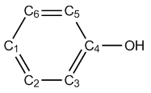
N N-1 N+1 f − f + Δf
C1 (p) -0.059 0.085 -0.119 0.144 0.060 -0.084 C2 (m) -0.039 0.027 -0.167 0.066 0.128 0.063 C3 (o) -0.060 0.032 -0.187 0.092 0.128 0.036 C4 0.074 0.174 0.022 0.100 0.052 -0.048 C5 (o) -0.073 0.009 -0.196 0.082 0.123 0.040 C6 (m) -0.041 0.034 -0.173 0.075 0.131 0.056
Note: The Hirshfeld charges reported above were estimated based on built-in sphericalized atomic densities.
For f −, the smallest two values occur at C2 and C6, therefore meta atoms are unfavorable sites for electrophilic attack.
For dual descriptor, the most positive values occur at C2 and C6, suggesting that they are the most unfavorable sites for electrophilic attack. C1 has a large negative value and hence favored by electrophilic reactant. Although the two ortho carbons (C3 and C5) have positive value, their magnitude is not as large as meta carbons, so dual descriptor indicates that ortho carbons are more possible than meta carbons to be reactive site for electrophilic attack. Our conclusion is completely in line with that of Section 4.5.4, in which we obtained the conclusion by visual inspecting isosurface of Fukui function and dual descriptor.
IMPORTANT NOTE: In daily research, I strongly suggest you directly using main function 22 to automatically calculate condensed Fukui function and dual descriptor, because the steps are extremely simple and meantime other useful quantities in conceptual density functional theory can be printed together, see Section 3.25 for introduction and 4.22.1 for example.
4.7.4 Illustration of computing Hirshfeld-I atomic charges¶
Hirshfeld-I (HI) is a more advanced technique to define atomic spaces than its predecessor (Hirshfeld). Before following the example given below, please briefly read Section 3.9.13 to gain basic knowledge of HI method and its implementation in Multiwfn. It is very important to note that in order to calculate HI charge, atomic radial densities files (.rad) of various elements in the current system at different charged states must be available. Commonly, I suggest you directly use the built-in .rad files in Multiwfn, so that you do not need to generate them before HI calculation. See Section 3.9.13 for details about this point.
Here we calculate HI charges for CH3COCl. For convenience, we will directly use built-in .rad files in this example. To do so, we copy "atmrad" folder from "examples" directory to current directory, then the .rad files in this folder will be employed by Multiwfn in the HI charge calculation.
Boot up Multiwfn and input examples\CH3COCl.wfn
Multiwfn session
- Generated at B3LYP/6-31G* level 7 — Population analysis and atomic charges
- 15 — Hirshfeld-I method
- 1 — Start calculation with default settings Then you will see iteration process
Performing Hirshfeld-I iteration to refine atomic spaces...
Cycle 1
Cycle 2 Maximum change: 0.202864
Cycle 3 Maximum change: 0.152850
Cycle 4 Maximum change: 0.106642
Cycle 5 Maximum change: 0.080325
Cycle 6 Maximum change: 0.063412
[ignored]
The "maximum change" denotes the maximum change of HI atomic charges, the iteration continues until "maximum change" is lower than the threshold, which is 0.0002 by default. After convergence, Multiwfn prints final HI atomic charges:
Atom 1(C ): -0.64593923
Atom 2(H ): 0.18144874
Atom 3(H ): 0.17983150
Atom 4(H ): 0.18144874
Atom 5(C ): 0.72667580
Atom 6(O ): -0.42009700
Atom 7(Cl): -0.20336855
Then you can choose if outputting these charges to .chg file in current folder. I suggest you compare above result with Hirshfeld charges, you will find the magnitude of HI charges is much higher than Hirshfeld charges. This phenomenon is expected, because HI atomic spaces properly contract or expand with respect to that of neutral state according to actual chemical environment, hence the size difference of atomic space among various atoms is greatly increased.
Letting Multiwfn automatically invoke Gaussian to generate .rad files In principle, it may be best to generate atomic .rad files at the same level as the current molecule, since in this case the result has strongest physical meaning. You can directly let Multiwfn invoke Gaussian to prepare the .rad files.
Before calculation, you should properly set "gaupath" in settings.ini file to actual Gaussian executable file. In addition, if "atmrad" folder has existed in current directory and it contains .rad files of C, H, O, and Cl elements, you should delete them.
Boot up Multiwfn and input examples\CH3COCl.wfn
Multiwfn session
- Generated at B3LYP/6-31G* level 7 — Population analysis and atomic charges
- 15 — Hirshfeld-I method
- 1 — Start calculation with default settings B3LYP/6-31G*
In the current case, the resulting charges are
Atom 1(C ): -0.667920
Atom 2(H ): 0.194766
Atom 3(H ): 0.188545
Atom 4(H ): 0.194766
Atom 5(C ): 0.755439
Atom 6(O ): -0.414041
Atom 7(Cl): -0.251555
As can be seen, the HI charges calculated based on the .rad files generated at B3LYP/6-31G* level are basically the same as those calculated based on built-in .rad files, therefore commonly I suggest directly using built-in .rad files since the calculation is easier in this case and Gaussian is not needed.
If you do not delete the "atmrad" folder or clean it up, then when you recalculate HI charges for CH3COCl, or calculate a molecule only consisting of C, H, O and Cl elements or some of them, Multiwfn will directly perform HI calculation based on the existing .rad files in the "atmrad" folder rather than invoke Gaussian to recalculate them.
Finally, it is noteworthy that the support of Hirshfeld-I in Multiwfn is never limited to population analysis, this partition method can also be used to calculate orbital composition (main function 8), and be applied in fuzzy analysis module (main function 15).
4.7.5 Calculating EEM atomic charges for ethanol-water cluster¶
Please first read Section 3.9.15 to understand basic features of Electronegativity Equalization Method (EEM) charges before following this example. Here we calculate EEM charges for ethanol-water cluster, which contains as many as 492 atoms:
Evidently, calculating atomic charges by quantum chemistry method for such a large system is too expensive; however, as you will see, evaluation of EEM charges even for a system composed by hundreds of atoms is rather easy.
Note that in order to calculate EEM charges in Multiwfn, currently you have to use MDL molfile (.mol) or .mol2 as input file, because only this file provides atomic connectivity information, which is needed in the calculation of EEM charges.
Boot up Multiwfn and input below commands
Multiwfn session
- examples\ethanol_water.mol — This is a snapshot of molecular dynamics simulation
- 7 — Population analysis and atomic charges
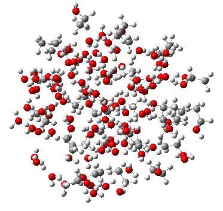
Multiwfn session
- 17 — EEM charge
- 0 — Start calculation You will immediately see
EEM charge of atom 1(O ): -0.658886
EEM charge of atom 2(H ): 0.322520
EEM charge of atom 3(H ): 0.270187
...
EEM charge of atom 488(C ): -0.071564
EEM charge of atom 489(H ): 0.145191
EEM charge of atom 490(H ): 0.125555
EEM charge of atom 491(O ): -0.616013
EEM charge of atom 492(H ): 0.310970
Electronegativity: 2.454144
The default EEM parameters were fitted by some researchers for reproducing B3LYP/6-31G CHELPG charges, therefore, the above EEM charges should be close to CHELPG charges evaluated at B3LYP/6-31G level (In fact, for present system, even if calculation of CHELPG charges is feasible, the result should be much worse than the EEM charges we just obtained. Because it is well-known that the quality of electrostatic fitting charges is very low for the atoms far from van der Waals surface, while in present system there are numerous heavily buried atoms).
Note that there are also many other built-in EEM parameters, you can choose them via option 1 before calculation.
Note on calculating EEM charge of the system containing π conjugation It is worth to note if one or more atoms are in π conjugation region, the conjugation must be represented as Lewis structure in the inputted .mol or .mol2 file, otherwise the calculation cannot be conducted.
For example, we use GaussView to create an azobenzene molecule:
Save it as .mol file, then use Multiwfn to calculate EEM charge based on this file, you will find below error:
Error: Multiplicity of atom 1 ( 4) exceeded upper limit ( 3)!
The present EEM parameters do not support such bonding status, or connectivity
in your input file is wrong
To understand the reason, open the .mol file by text editor, you can find below two lines
1 2 4 0 0 0 0
1 6 4 0 0 0 0
which indicates that the bond multiplicity of 1-2 and 1-6 is 4, clearly this is unreasonable, because formal bond order between two carbons cannot be four! This issue comes from the fact that
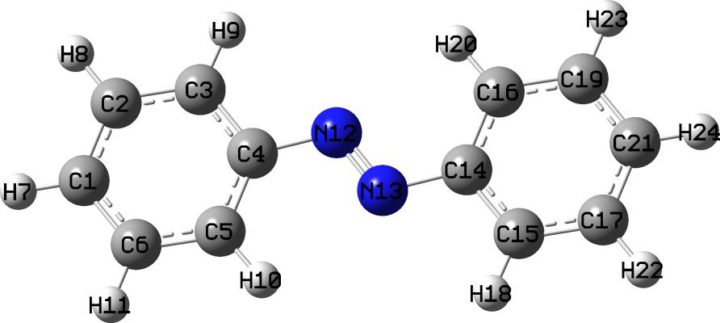
GaussView always records a conjugated bond in .mol as a quadruple bond. To solve this problem, the best way is installing OpenBabel (freely available at http://openbabel.org), then use this command to convert the previous .mol file to a new .mol file: obabel old.mol -O new.mol. Then if you use GaussView to open the new.mol, you will find the bonding has fully satisfied Lewis structure:
Now we use Multiwfn to calculate its EEM charges again, you will find below output, which is quite reasonable:
EEM charge of atom 1(C ): -0.1021985241
EEM charge of atom 2(C ): -0.0879338435
EEM charge of atom 3(C ): -0.1330865020
...ignored
EEM charge of atom 11(H ): 0.1188370423
EEM charge of atom 12(N ): -0.3186294612
EEM charge of atom 13(N ): -0.3186294612
...ignored
4.7.6 Determining correspondence between basis functions and atomic orbitals via population analysis¶
Determine correspondence between basis functions and atomic orbitals is important if one wants to plot PDOS of some atomic orbitals via main function 10, or to evaluate contribution to molecular orbitals from specific atomic orbitals using main function 8. The correspondence is easy to be identified if Pople basis set is used. For example, 6-31G* implies using one basis function with contraction degree of 6 to represent each inner atomic orbital, while each valence atomic orbital is represented by a basis function with contraction degree of 3 and an uncontracted basis function. However, for most other types of basis sets, the correspondence is often difficult to determine. Fortunately, as will be illustrated in this section, if one studies total and spin population of basis function shells via Mulliken population analysis, the correspondence can be unambiguously identified.
Two typical examples will be given below, more examples and discussions can be found from my blog article “Determining correspondence between basis functions and atomic orbitals via population analysis” (http://sobereva.com/418, in Chinese). In the text below atomic orbitals will be denoted as lower case (e.g. s, p, d...), while basis functions will be written as upper case (e.g. S, P, D...).
Example 1: cc-pVTZ for sulfur Sulfur atom has configuration of 1\(1s^{2}2s^{2}2p^{6}3s^{2}3p^{4}\), the ground state is triplet. The
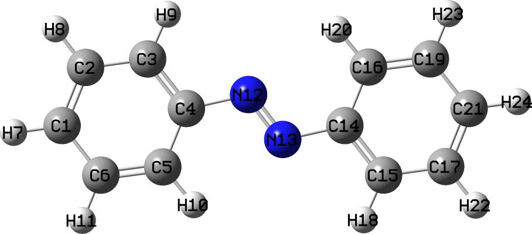
examples\sulfur_cc-pVTZ.fch is the .fch file calculated at B3LYP/cc-pVTZ level by Gaussian16 for a single sulfur atom at its triplet state. Load this file into Multiwfn, then input
Multiwfn session
- 7 — Population analysis and atomic charges
- 5 — Mulliken analysis
- 1 — Output Mulliken analysis result You will immediately see
Shell Type Atom Alpha_pop. Beta_pop. Total_pop. Spin_pop.
1 S 1(S ) 0.99997 0.99997 1.99994 -0.00000
2 S 1(S ) 0.94424 0.94387 1.88812 0.00037
3 S 1(S ) 0.60678 0.56547 1.17225 0.04131
4 S 1(S ) 0.12371 0.13260 0.25631 -0.00889
5 S 1(S ) 0.32408 0.35782 0.68189 -0.03374
6 P 1(S ) 2.93141 2.90842 5.83983 0.02299
7 P 1(S ) 1.58628 0.47788 2.06416 1.10840
8 P 1(S ) 0.59303 0.26385 0.85688 0.32918
9 P 1(S ) 0.88863 0.34985 1.23848 0.53879
10 D 1(S ) 0.00064 0.00017 0.00081 0.00048
11 D 1(S ) 0.00058 0.00011 0.00069 0.00046
12 F 1(S ) 0.00065 0.00000 0.00065 0.00064
We want to identify which S basis functions respectively correspond to 1s, 2s and 3s atomic orbitals, and which P basis function shells respectively correspond to 2p and 3p atomic orbital shells.
All the two unpaired electrons of triplet sulfur atom are distributed on 3p shell, since the sum of spin population of 7P, 8P and 9P is 1.10840+0.32918+0.53879=1.976, which is nearly equal to two, we can say that these three P shells correspond to 3p shell. The remainder 6P shell clearly corresponds to 2p shell, this can also be confirmed that its population number is 5.840, which is close to expected occupation number of 2p shell (6.0).
Then we check the case of S shells. The sum of population number of 3S, 4S and 5S is 1.17225+0.25631+0.68189=2.110, which is close to actual occupation number of 3s atomic orbital (2.0); considering that occupation number of both 1S and 2S are close to 2.0, it can be concluded that 1S, 2S and (3S,4S,5S) mainly represent 1s, 2s and 3s atomic orbitals, respectively.
Example 2: def2-TZVP for Au For Au atom, def2-TZVP is a pseudopotential basis set with Stuttgart small core pseudopotential, 60 inner electrons are replaced with pseudopotential, therefore only the valence electrons 5s25p65d106s1 are explicitly represented by the def2-TZVP basis set. The examples\Au_def2-TZVP.fch is the .fch file calculated at B3LYP/def2-TZVP level by Gaussian16 for a single Au atom at its ground state (doublet state). Load this file into Multiwfn and carry out population analysis as the last example, you will see
Shell Type Atom Alpha_pop. Beta_pop. Total_pop. Spin_pop.
1 S 1(Au) 0.01764 0.01588 0.03352 0.00175
2 S 1(Au) -0.25037 -0.22638 -0.47675 -0.02399
3 S 1(Au) 0.90648 0.84814 1.75462 0.05834
4 S 1(Au) 0.33047 0.35849 0.68895 -0.02802
5 S 1(Au) 0.60949 0.00436 0.61385 0.60513
6 S 1(Au) 0.38630 -0.00049 0.38581 0.38679
7 P 1(Au) 1.32302 1.32562 2.64864 -0.00260
8 P 1(Au) 1.43496 1.44146 2.87642 -0.00650
9 P 1(Au) 0.24145 0.23250 0.47395 0.00896
10 P 1(Au) 0.00057 0.00042 0.00099 0.00015
11 D 1(Au) 3.11664 3.17522 6.29186 -0.05859
12 D 1(Au) 1.48961 1.45237 2.94198 0.03724
13 D 1(Au) 0.39375 0.37241 0.76616 0.02135
14 F 1(Au) 0.00000 0.00000 0.00000 0.00000
Undoubtedly, all P shells (7P, 8P, 9P, 10P) represent the only p shell (5p), while all D shells (11D, 12D, 13D) represents the only d shell (5d). Since the sum of population number of 5S and 6S (i.e. 0.61385+0.38581) is exactly equal to 1.0, and meantime the sum of spin population number of 5S and 6S is also equal to 1.0, it is clear that the 5S and 6S shells collectively represent the 6s atomic orbital, which has a single unpaired electron. The total electrons in the other four S shells (1S, 2S, 3S, 4S) is almost exactly 2.0, evidently the doubly occupied 5s is mainly represented by them.
4.7.7 Illustration of deriving RESP charges and normal ESP fitting charges with extra constraints¶
In this section I will take many examples to substantially illustrate the use of the extremely powerful and flexible RESP module of Multiwfn, which can very conveniently calculate standard RESP atomic charges and normal ESP fitting charges with/without charge and equivalence constraints. Reading Section 3.9.16 is strongly recommended so that you have enough knowledge about the RESP module as well as adequate understanding on the idea of ESP fitting method.
More detailed descriptions and discussions can be found from my blog article "Principle of RESP charge and its calculation in Multiwfn" (in Chinese, http://sobereva.com/441).
For saving space, only the most important files involved in the examples below are provided in "examples\RESP" folder, while other files, including Gaussian output files and .fch files, can be downloaded at http://sobereva.com/multiwfn/extrafiles/RESP.zip.
In this section, only an example of deriving RESP charges for ground state is given. It is also easy to calculate RESP charges for excited state. You can follow this example http://sobereva.com/wfnbbs/viewtopic.php?pid=747 if you are a Gaussian user.
Hint: Speeding up ESP calculation by cubegen. Since calculation of ESP on fitting points is a computationally demanding step, while calculation speed of ESP of internal code of Multiwfn is slower than the cubegen utility in Gaussian package if number of your CPU cores is less than 10, therefore if Gaussian is available on your machine and the input file is .fch/fchk, it is suggested to allow Multiwfn to invoke cubegen to evaluate ESP to reduce cost of deriving ESP fitting charges. You simply need to set "cubegenpath" parameter in settings.ini to actual path of cubegen executable file in your machine. See Section 5.7 for details.
4.7.7.1 Example 1: Deriving RESP charges for dopamine in ethanol
environment
In this section I introduce the procedure of calculating standard RESP atomic charges for dopamine. Ethanol solvent environment is assumed and it will be represented using IEFPCM implicit solvation model. The structure of dopamine is shown below.
Commonly, the geometry used for deriving RESP charges should be optimized at reasonable level. Above geometry was optimized at B3LYP-D3(BJ)/6-311G** level with IEFPCM implicit solvation model, and it was found to be the most stable geometry of present molecule.
Now, use Gaussian to run examples\RESP\dopamine-single\dopamine.gjf to generate corresponding .fch file for this geometry. As can be seen in the .gjf file, the keywords are b3lyp/6-311g(d,p) SCRF=solvent=ethanol, this combination is not expensive while the resulting wavefunction is completely adequate to yield reliable RESP charges.
Multiwfn session
- Boot up Multiwfn and input dopmaine.fch — The .fch file just yielded
- 7 — Population analysis
- 18 — RESP module
- 1 — Calculate standard RESP charges using two-stage fitting procedure During the calculation, Multiwfn first sets up atomic radii and determines position of fitting points, and then calculates ESP values at the fitting points. After that, the first stage of standard RESP calculation starts, the parameters and conditions employed in this stage can be found from outputted information:
No charge constraint is imposed in this stage
No atom equivalence constraint is imposed in this fitting stage
**** Stage 1: RESP fitting under weak hyperbolic penalty
Convergence criterion: 0.00000100
Hyperbolic restraint strength (a): 0.000500 Tightness (b): 0.100000
Iter: 1 Maximum charge variation: 1.0067306224
Iter: 2 Maximum charge variation: 0.0503406929
Iter: 3 Maximum charge variation: 0.0040155661
Iter: 4 Maximum charge variation: 0.0003425806
Iter: 5 Maximum charge variation: 0.0000329903
Iter: 6 Maximum charge variation: 0.0000032384
Iter: 7 Maximum charge variation: 0.0000003207
Successfully converged!
As you can see, variation of atomic charges converges after 7 cycles in this stage. Then the second stage starts:
**** Stage 2: RESP fitting under strong hyperbolic penalty
Atoms equivalence constraint imposed in this fitting stage:
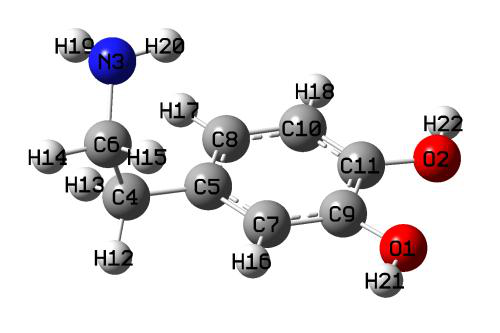
Constraint 1: 12(H ) 13(H )
Constraint 2: 14(H ) 15(H )
Fitting objects: sp3 carbons, methyl carbons and hydrogens attached to them
Indices of these atoms:
4C 12H 13H 6C 14H 15H
Convergence criterion: 0.00000100
Hyperbolic restraint strength (a): 0.001000 Tightness (b): 0.100000
Iter: 1 Maximum charge variation: 1.0237455608
Iter: 2 Maximum charge variation: 0.0068736797
Iter: 3 Maximum charge variation: 0.0000294321
Iter: 4 Maximum charge variation: 0.0000001351
Successfully converged!
As indicated in the output, in the second fitting stage, the two hydrogens at each of the two
−CH2− groups are required to be equivalent during the fitting. In addition, charges of only six atoms are fitted in stage 2, they are carbons and hydrogens in the two −CH2− groups, while charges of other atoms keep unchanged at the values yielded in fitting stage 1.
The resulting RESP charges are
Center Charge
1(O ) -0.5406621847
2(O ) -0.5360154461
...[ignored]
12(H ) 0.0727189426
13(H ) 0.0727189426
14(H ) -0.0640826813
15(H ) -0.0640826813
...[ignored]
Sum of charges: 0.000000
RMSE: 0.002097 RRMSE: 0.110457
If you examine the charges carefully, you will find all charges are chemically meaningful. The RMSE and RRMSE are not large, implying that quality of ESP fitting is nice. One can see that equivalence constraints indeed work, the H12 and H13 share the same charge 0.0727, while both H14 and H15 have charge of -0.064.
Directly loading fitting points and ESP values from Gaussian output file As mentioned in Section 3.9.16.2, during calculation of ESP fitting charges in the RESP module, it is possible to make Multiwfn directly load fitting points and ESP values from Gaussian output file of pop=MK or pop=CHELPG task. As an illustration, the Gaussian input file of dopamine for this purpose is provided as examples\RESP\dopamine-single\dopamine_pop_MK.gjf, use Gaussian to run it, then boots up Multiwfn and input
dopmaine.fch // In present situation this file in fact is only used to provide geometry information so that Multiwfn can determine atomic connectivity, therefore you can also use other formats such as .xyz, .pdb and .wfn instead
Multiwfn session
- 7 — Population analysis
- 18 — RESP module
- 8 — Let Multiwfn directly load fitting points information from Gaussian output file
Multiwfn session
- 1 — Calculate standard RESP charges using two-stage procedure
- dopamine_pop_MK.out — The Gaussian output file with IOp(6/33=2,6/42=6) pop=MK keywords
Then the calculation of atomic charges will be completed very quickly, because calculation of ESP values is avoided. Since the number and positions of fitting points generated by Multiwfn and those generated by Gaussian pop=MK task are different, current result is slightly different to that we obtained earlier.
4.7.7.2 Example 2: Taking multiple conformations into account during RESP
charge calculation of dopamine
In this example we still calculate standard RESP charges for dopamine, but multiple conformations are explicitly considered in the ESP fitting procedure. It was found that there are four dominating conformations of dopamine in gas phase, the corresponding Gaussian input files of optimization task at B3LYP-D3(BJ)/6-311G** level have been provided in examples\RESP\dopamine_4conf folder, run them by Gaussian and then convert the resulting .chk files to .fch files.
My earlier Gibbs free energy calculations showed that at room temperature, according to Boltzmann distribution, the population of the four conformers are 8.48%, 2.66%, 48.45% and 40.42%, respectively. Therefore we should write a plain text file named conf.txt (other filenames are also acceptable) with the content below, assuming that all the .fch files have been put into current folders.
dopamine1.fch 0.0848
dopamine2.fch 0.0265
dopamine3.fch 0.4844
dopamine4.fch 0.4041
The first column is file path of each conformer, while the second column is corresponding weight. Evidently, the sum of all weights must be exactly equal or approximately equal to unity.
Boot up Multiwfn and input dopamine1.fch // In present case, the file loaded at this stage is only used to provide geometry information that used to determine atomic connectivity, thus you can also use .fch of other conformers, the result will not be affected
Multiwfn session
- 7 — Population analysis
- 18 — RESP module
- -1 — Load conformation list file conf.txt
- Input actual path of this file 1 — Calculate standard RESP charges using the two-stage procedure The result is
Center Charge
1(O ) -0.5127119135
2(O ) -0.4946153408
...[ignored]
21(H ) 0.4040820785
22(H ) 0.3885435037
Conformer: 1 RMSE: 0.002885 RRMSE: 0.176042
Conformer: 2 RMSE: 0.002727 RRMSE: 0.163666
Conformer: 3 RMSE: 0.002234 RRMSE: 0.146771
Conformer: 4 RMSE: 0.002102 RRMSE: 0.134091
Weighted RMSE: 0.002249 Weighted RRMSE 0.144547
As can be seen, when considering multiple conformations, Multiwfn gives RMSE and RRMSE for each conformer as well as weighted RMSE and RRMSE. The data shows that current atomic charges have better ESP reproducibility for conformations 3 and 4 than conformations 1 and 2. The reason is not difficult to interpret, because the weights of conformations 3 and 4 in conf.txt are significantly higher than 1 and 2, therefore the fitted charges prone to faithfully represent charge distribution of conformers 3 and 4.
It is worth to note that if you set weight of conformer 1 in the conf.txt to 1.0 while set that of other ones to zero, then the outputted statistical error will be
Conformer: 1 RMSE: 0.002047 RRMSE: 0.124925
Conformer: 2 RMSE: 0.002862 RRMSE: 0.171810
Conformer: 3 RMSE: 0.003391 RRMSE: 0.222734
Conformer: 4 RMSE: 0.004172 RRMSE: 0.266133
It can be seen that the atomic charges obtained at this time represent ESP of conformer 1 very well, because the RMSE and RRMSE are small, while ESP reproducibility of conformers 3 and 4, which have highest probability of occurrence, is no longer quite good. Therefore, current RESP charges is not ideal for molecular dynamics modeling of dopamine. This observation reflects the importance of considering multiple conformations for flexible molecules. Indeed, explicit consideration of multiple conformations in ESP fitting is somewhat troublesome and time-consuming, if you decide to obtain ESP fitting charges only by single structure, you should at least use the structure with the lowest free energy as much as possible.
Directly loading fitting points and ESP values from Gaussian output file of each conformer
When considering multiple conformations, the coordinates of fitting points as well as ESP values can also be directly loaded from Gaussian output files, here I present an example. For present molecule, the Gaussian input files of pop=MK task corresponding to the four conformers have been provided in "examples\RESP\dopamine_4conf\ESP" folder, run them by Gaussian to obtain .out files, then write a plain text file named e.g. confESP.txt with the following content, with assumption that the four .out files have been placed to C:\ directory.
C:\dopamine1_ESP.out 0.0848
C:\dopamine2_ESP.out 0.0265
C:\dopamine3_ESP.out 0.4844
C:\dopamine4_ESP.out 0.4041
After that, load .fch (or other kinds of files) of any conformer into Multiwfn and enter interface of RESP module, then select
Multiwfn session
- -1 — Load conformation list file confESP.txt
- Input actual path of this file 8 — Make Multiwfn directly load fitting point information from Gaussian output file
- 1 — Calculate standard RESP charges using the two-stage procedure Then standard RESP charges will be immediately shown.
4.7.7.3 Example 3: Imposing equivalence constraint in ESP fitting of
Dimethyl phosphate
Calculation of standard ESP charges has been illustrated in above two examples, next I exemplify how to calculate normal ESP fitting (i.e. one-stage fitting) with equivalence constraint. Dimethyl phosphate is taken as instance, its structure is shown below
The two methoxy groups of this system are chemically equivalent, and are easily rotated around O-P bond during molecular dynamic simulation. Therefore, the charges of O5 and O6 should be the same, the charges of C7 and C11 should be the same, and a total of six hydrogens on the two methyl groups (H8, H9, H10, H12, H13, H14) should also be the same. However, when only one structure is taken into account, it is clear that such expectation in charge distribution cannot be achieved. Present example uses this system to demonstrate how to calculate the ESP fitting charges that meet the above equivalence requirements.
We first create a plain text file called e.g. eqvcons.txt, where each row contains indices of the atoms whose charges will be constrained to be the same. Therefore, the file content corresponding to current situation should be (in random order)
5,6
7,11
8-10,12-14
Run the Gaussian input file of optimization task at B3LYP-D3(BJ)/6-311G** level for present molecule (examples\RESP\C2H7O4P\C2H7O4P.gjf), then convert the resulting .chk file to .fch. Next, Boot up Multiwfn and input
Multiwfn session
- C2H7O4P.fch 7 — Population analysis
- 18 — RESP module
- 5 — Modify equivalence constraint (Note that for one-stage ESP fitting, by default hydrogens in each CH2 and CH3 group are constrained to be equivalent)
Multiwfn session
- 1 — Load equivalence constraint setting from external plain text file eqvcons.txt
- The file we just created 2 — Start one-stage ESP fitting calculation with constraints The result is
Center Charge
1(P ) 1.1205246388
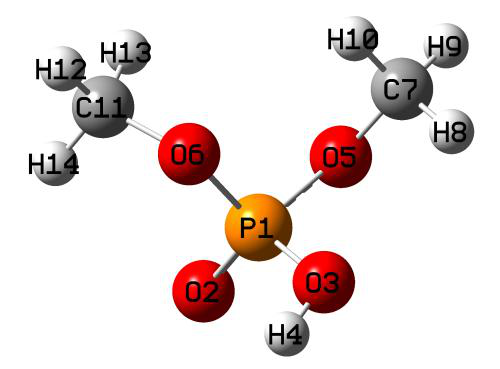
3(O ) -0.5887730856
4(H ) 0.4109873910
5(O ) -0.4034641689
6(O ) -0.4034641689
7(C ) 0.0352980588
8(H ) 0.0694288037
9(H ) 0.0694288037
10(H ) 0.0694288037
11(C ) 0.0352980588
12(H ) 0.0694288037
13(H ) 0.0694288037
14(H ) 0.0694288037
Sum of charges: 0.0000000000
RMSE: 0.002541 RRMSE: 0.136047
Obviously, the result fully satisfies the equivalence constraint we have made, and the atomic charge values are also very reasonable and chemically significant. If we do not make the customized constraint but employ the default equivalency setting, the RRMSE will be 0.113024. Although the equivalence constraint we have made increases the RRMSE, indicating that the ESP reproducibility is lowered, since the RRMSE does not increase too much, the constraint we currently employed is within reasonable range.
Note that in the standard two-stage RESP charge calculation, customized charge constraint and equivalence constraint can also be applied, however they only take effect for the first stage (by default no constraint is employed in this stage). For the present molecule, if you load equivalence constraint from the above eqvcons.txt and then select 0 to perform two-stage RESP fitting, you will find the O5 and O6 share identical charge in the result, but charges of C7 and C11 are different, and charges of hydrogens in different methyl groups are also different, this is because the customized constraints do not take effect for the second stage (according to standard definition of two-stage RESP fitting, the carbons and hydrogens in the two methyl groups are refitted at the second stage).
4.7.7.4 Example 4: Evaluation of atomic charges of aspartic acid residue
with equivalence and charge constraints
This example is more complicated than the previous three ones, because multiple conformations, equivalence constraints and charge constraints are all involved. After carefully reading this section, I believe you will deeply feel that the RESP module of Multiwfn is amazingly flexible.
In this section we will calculate ESP fitting charges for aspartic acid (ASP) residue. The ASP is one of the most important amino acids in proteins. In general, in order to make electronic structure of a given residue in quantum chemistry calculation close to that in actual protein environment, the nitrogen terminal of the residue should be capped by acetyl group (ACE) while carbon terminal should be capped by N-methyl amide (NME). For present case, this treatment results in a model system ACE-ASP-NME.
The two most typical secondary structures of proteins are alpha helix and beta-sheet. From the point of view of the residues that make up them, the difference comes from the phi and psi dihedrals of the residue backbone. It has been suggested that residue conformations corresponding to both the secondary structures should be taken into account in the ESP fitting procedure. Also note that the net charge of the residue segment in the ACE-ASP-NME system must be an integer. Assume that the proton of the carboxyl group of the ASP side chain has dissociated, the net charge of the ASP
residue should be constrained to be -1.0. In addition, given that the two oxygens of the carboxylate are chemically equivalent, it is preferable to apply an equivalence constraint to the two oxygens. The two hydrogens in the CH2 group of the ASP side chain should also be constrained to be equivalent.
The Gaussian input files of optimization task for the ACE-ASP-NME models corresponding to alpha helix and beta-sheet have been provided as alpha.gjf and beta.gjf in "examples\RESP\ACE-ASP-NME" folder. As can be seen in the files, the keywords correspond to B3LYP-D3/6-311G** level with IEFPCM solvation model to represent water environment. In the optimization, the phi and psi dihedrals are fixed to their initial values (the dihedrals will vary remarkably during
optimization if they are not frozen). In alpha.gjf, the phi and psi are -90° and -60°, respectively, corresponding to typical case of alpha helix. While in beta.gjf, the two dihedrals are set to -100° and 130°, reflecting typical situation of beta-sheet.
Run the two .gjf files by Gaussian, and convert resulting .chk files to .fch format. The two optimized structures are shown below. The region surrounded by green dashed ellipse is the ASP residue, the charges of these atoms are what we are interested in. The phi and psi dihedrals mentioned above correspond to 6-3-1-13 and 1-3-6-19, respectively.
We create a plain text file named for example chgcons.txt, in this file each line defines a charge constraint term. Since we require that the ASP residue has total charge of -1, we should write the following content in this file
1-12 -1
Note that in the RESP module, there is no upper limit on the number of charge constraint terms. Also note that the indices of the atoms involved in charge constraint are not necessarily contiguous, for example if you write 1,3-5,8,9-12 1.5, then sum of charges of atoms 1,3,4,5,8,9,10,11,12 will be constraint to 1.5.
Then we create a plain text file named for example eqvcons.txt, in this file each line defines a equivalence constraint term. As mentioned earlier, O11 and O12 should be equivalent, H7 and H8 should be equivalent, therefore for present case the content should be
11,12
7,8
Although the hydrogens in the methyl groups at the two ends of the model system are chemically
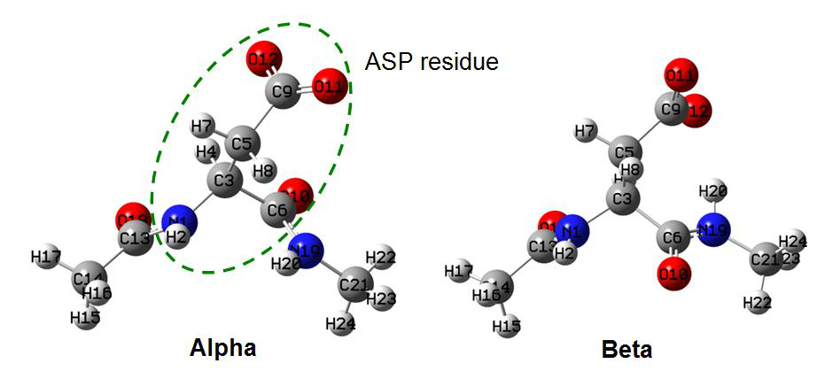
equivalent, since they are not of our interest, the equivalence constraint setting is ignored.
Next, we write a file named for example conflist.txt, which contains list of .fch files of all conformers. In the present circumstance we hope that the resulting atomic charges can equally well represent the actual charge distribution of ASP residue in both alpha helix and beta-sheet secondary structures, therefore weight of both the conformers should be 0.5. Assuming that .fch files have been placed in D:\ folder, the file content should be
D:\alpha.fch 0.5
D:\beta.fch 0.5
Finally, boot up Multiwfn, load either alpha.fch or beta.fch, then enter RESP module and input below commands
Multiwfn session
- 5 — Modify the equivalence constraint
- 1 — Load equivalence constraint setting from external plain text file eqvcons.txt
Multiwfn session
- Set charge constraint 1 — Load charge constraint setting from external plain text file chgcons.txt
- The charge constraint file we created -1 — Load list of conformers and weights from external file conflist.txt
- The conformation list file we created 2 — Start one-stage ESP fitting calculation with constraint The output is
Center Charge
1(N ) -0.5680297892
2(H ) 0.2986898310
3(C ) 0.2320659798
4(H ) 0.0039518865
5(C ) -0.1872465380
6(C ) 0.5806052594
7(H ) 0.0309424424
8(H ) 0.0309424424
9(C ) 0.7732537802
10(O ) -0.6023381592
11(O ) -0.7964185676
12(O ) -0.7964185676
[ignored...]
Sum of charges: -1.0000000000
Conformer: 1 RMSE: 0.002175 RRMSE: 0.017514
Conformer: 2 RMSE: 0.002087 RRMSE: 0.017379
Weighted RMSE: 0.002131 Weighted RRMSE 0.017446
The above calculation result is very reasonable, and it can be seen that both the charge constraint and equivalence constraint work perfectly. Moreover, since the weights of the two conformations are set to be the same, the RMSE or RRMSE corresponding to the two conformers have comparable magnitude. Given that the RRMSE is very small, the current fitted charges should
be able to describe the state of ASP residue in various proteins well.
4.7.7.5 Example 5: Example of setting equivalence constraint according to
local or global point group symmetry
1: A small molecule To obtain ESP fitting charge for below molecule, we should constrain the three fluorine atoms to have the same charge because they are chemically equivalent. In addition, due to symmetry of the local geometry of the benzene moiety, the atoms at its two sides should be equivalent, namely we should constrain H5=H7, H10=H6, C2=C4, C3=C9.
Although you can manually create a file containing above equivalent constraints, it is more convenient to make Multiwfn automatically create the file according to point group symmetry of local regions of the CF3 group and benzene moiety, as shown below.
Boot up Multiwfn and input CF3benCOCH3.fch
Multiwfn session
- 7 — Population analysis and atomic charge calculation
- 18 — RESP module
- 5 — Set equivalence constraint
- 11 — Generate a file containing equivalence constraints according to point group symmetry of selected regions
Then we need to input atomic indices in each fragment that has local symmetry. In order to make finding the indices convenient, I suggest using GaussView to open the above .fch file, then select the fragment as yellow, then enter "Tools" - "Atom Selection" and copy the atomic indices from the text box to Multiwfn window, as illustrated below
The region colored by yellow has point group of C2v, if we provide the corresponding indices 1-7,9-10 to Multiwfn, then Multiwfn will find symmetrically equivalent atoms and write to eqvcons_PG.txt in current group (Notice that we should not select the whole benzene moiety,
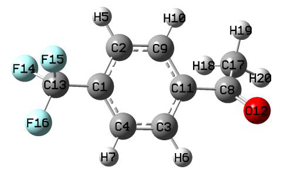
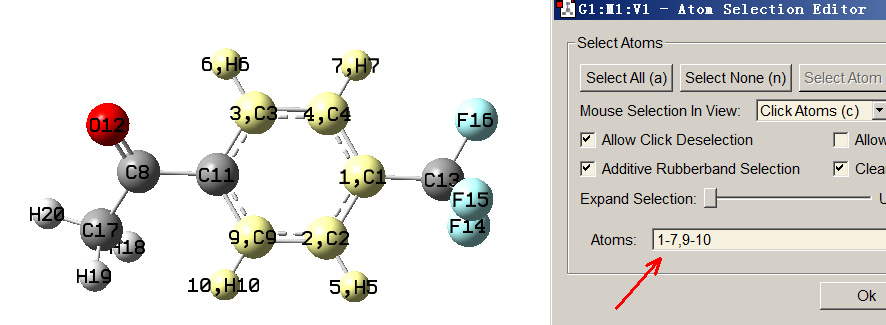
namely 1-7,9-11, because this fragment has point group of D2h, in this case Multiwfn will also regard C1 and C11 as symmetrically equivalent atoms).
Now we input 1-7,9-10 in Multiwfn window, then you will see
Detected point group: C2v
Number of symmetry-equivalence classes: 4
Class 1 (C ): 2 atoms
2, 4
Class 2 (C ): 2 atoms
3, 9
Class 3 (H ): 2 atoms
5, 7
Class 4 (H ): 2 atoms
6, 10
Accept and append to eqvcons_PG.txt in current folder? (y/n)
Clearly, symmetrically equivalent atoms have been correctly identified, therefore we input y to write the corresponding constraint setting to eqvcons_PG.txt in current folder.
Next, we use this feature to add the three fluorine atoms into the equivalence constraint file. In the Multiwfn window we input atomic indices of the CF3 group, namely 13-16, then you will see
Detected point group: C3v
Number of symmetry-equivalence classes: 1
Class 1 (C ): 3 atoms
14, 15, 16
The printed information is obviously correct, therefore we input y. Then input q to exit. Now you will find the current content of the eqvcons_PG.txt is
2, 4
3, 9
5, 7
6, 10
14, 15, 16
The content is fully in line with our expectations. In fact, we can also similarly set the three hydrogens in the methyl group as equivalent atoms by this interface, however we do not do this because in this example we will employ two-stage RESP fitting, at the second stage the equivalence constraint is automatically applied to the three hydrogens.
Subsequently, in the Multiwfn window we input
Multiwfn session
- 1 — Load equivalence constraint from external file eqvcons_PG.txt
- The file just generated 1 — Start standard two-stage RESP fitting The result is
Center Charge
1(C ) 0.0091127275
2(C ) -0.1055999399
3(C ) -0.1400843859
4(C ) -0.1055999399
5(H ) 0.1287865888
6(H ) 0.1361477888
7(H ) 0.1287865888
8(C ) 0.6140083901
9(C ) -0.1400843859
10(H ) 0.1361477888
11(C ) -0.0475485792
12(O ) -0.4669646019
13(C ) 0.4344682195
14(F ) -0.1667205104
15(F ) -0.1667205104
16(F ) -0.1667205104
17(C ) -0.4512569713
18(H ) 0.1232807476
19(H ) 0.1232807476
20(H ) 0.1232807476
Sum of charges: -0.0000000000
RMSE: 0.001518 RRMSE: 0.115139
As can be seen, the charges are very reasonable and fully meet our expectations. 2: Coronene Let us see a molecule containing relatively large number of atoms and having high-order point group, namely coronene, which has D6h point group.
Because the distribution of ESP fitting points does not satisfy point group symmetry, the resulting charges thus do not fulfill D6h symmetry. For example, you will find C17 and C18 have charge of -0.2243 and -0.2169, respectively, however their charges should be identical. Despite the difference is negligible, it is best to eliminate it. The most ideal way to make the resulting charges fully satisfy the point group is imposing equivalence constraint according to the symmetry, however manually writing the constraint file is quite laborious for such a large system, therefore we again use Multiwfn recognize point group and automatically generate the constraint file.
Boot up Multiwfn and input coronene.fch
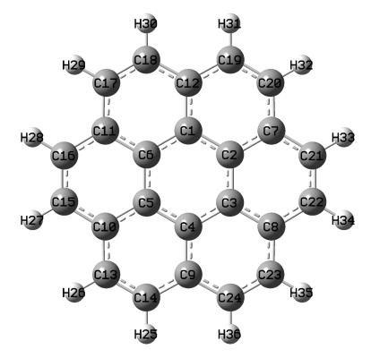
Multiwfn session
- 7 — Population analysis and atomic charge calculation
- 18 — RESP module
- 5 — Set equivalence constraint
- 11 — Generate file containing equivalence constraints according to point group symmetry of selected region
a // Select the entire system You will see the equivalent atoms have been correctly identified:
Detected point group: D6h
Number of symmetry-equivalence classes: 4
Class 1 (C ): 6 atoms
1, 2, 3, 4, 5, 6
Class 2 (C ): 6 atoms
7, 8, 9, 10, 11, 12
Class 3 (C ): 12 atoms
13, 14, 15, 16, 17, 18, 19, 20, 21, 22, 23, 24
Class 4 (H ): 12 atoms
25, 26, 27, 28, 29, 30, 31, 32, 33, 34, 35, 36
Multiwfn session
- Then we input below commands y — Write the four classes equivalent constraints to eqvcons_PG.txt in current folder q
- Exit 1 — Load equivalence constraint file eqvcons_PG.txt
- 1 — Perform standard two-stage RESP fitting (note that the result is identical to one-stage fitting, because no atoms will be refitted in the second stage for this molecule)
From the printed result, you can find the atoms in each of the four detected classes are indeed equivalent. The value of aforementioned charges of C17 and C18 are -0.220866 currently, which is quite reasonable.
By the way, via suboption 10 in option 5 you can export equivalence constraint of hydrogens in all CH2 and CH3 to eqvcons_H.txt in current folder. If you combine this file and eqvcons_PG.txt into a single file, then load it into Multiwfn and perform normal ESP fitting, the two kinds of equivalence constraint will simultaneously take effect (however, the content of the two sets of constraint should not be contradict to each other)
It is noteworthy that, sometimes after inputting atomic indices in the aforementioned subfunction 11 of option 5, Multiwfn does not print point group, that means the determination of point group is failed. However, this failure does not necessarily mean that the symmetrically equivalent atoms are not properly identified, therefore if the printed atomic indices are reasonable, you can still input y to write the constraint to eqvcons_PG.txt. In contrast, if you find the indices of the symmetrically equivalent atoms are not correctly identified, you should input n to cancel the writting, and then modify the tolerance for determining point group (for example, inputting t 0.05 means changing the tolerance to 0.05), after that you can input the atomic indices again and check if the equivalent classes have been reasonably recognized. The default tolerance is 0.1, when you encounter problem, you can either try to increase it or decrease it. Also note that the equivalent atoms are always correctly detected if the point group is correctly printed.
4.7.7.6 Example 6: RESP charge calculation with additional fitting centers
Multiwfn is able to calculate RESP charges for additional fitting centers, in other words, some point charges to be fitted are not necessarily at nuclear positions. Such non-atomic point charge is
valuable in some cases, such as better reproducing ESP around lone pair and σ-hole regions, this idea has already been employed in a few forcefields. In this example, I will illustrate how to fit
charge for non-atomic points by taking C18 system as example.
The C18 was very systematically and detailedly studied in my work Carbon, 165, 468 (2020), Carbon, 165, 461 (2020) and http://sobereva.com/carbon_ring.html for more. The ESP colored vdW surface map is shown below
The minimum structure of C18 has D9h point group, therefore, if we calculate RESP charges as usual, all resulting atomic charges will be exactly zero. Clearly such atomic centered charges are completely useless in reproducing ESP around vdW surface for this very special system. In order to better represent its ESP, it is best to fit some point charges located at midpoint of each C-C bond.
The .fchk file of C18 system corresponding to ωB97XD/def2-TZVP wavefunction at minimum point structure can be download at: http://sobereva.com/multiwfn/extrafiles/C18.zip. If you place additional fitting centers at midpoint of each C-C bond, the situation will correspond to the map below, in which each purple sphere corresponds to an additional fitting center. The Gaussian .gjf file corresponding to the map below has been provided as examples\RESP\C18\C18.gjf.
In this instance, we will simultaneously fit atomic charges and the point charges at midpoint of the C-C bonds.
Before starting RESP fitting calculation, we need to write a text file containing X, Y, Z coordinate of all additional fitting centers, and the first line should be the total number of additional
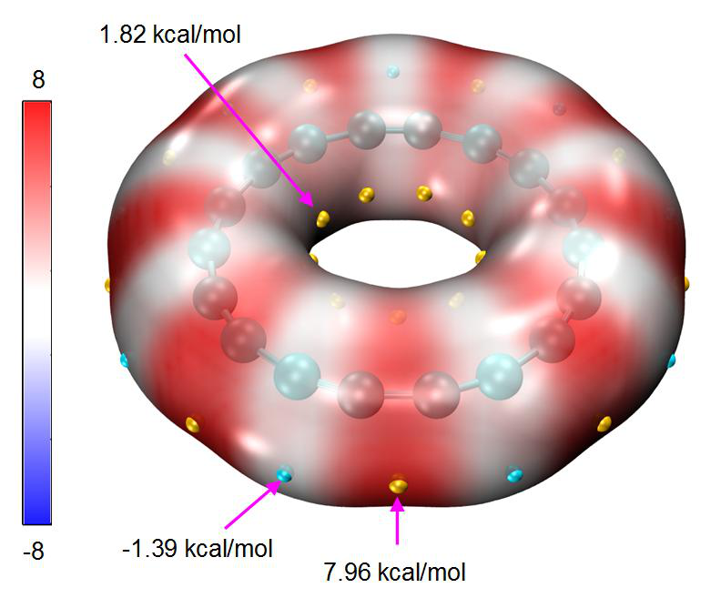
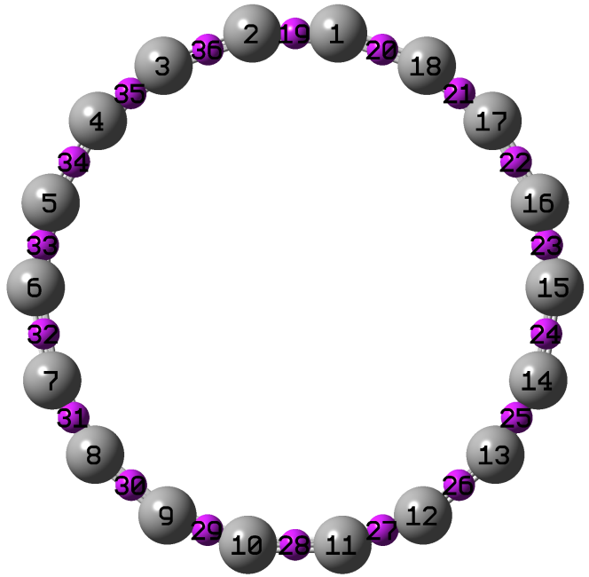
fitting centers, see examples\RESP\C18\fitcen.txt.
In addition, we need to write an equivalence constraint file to ensure that the resulting point charges in each set are exactly identical: (1) Atomic charges of all carbons (2) All points at midpoint of short C-C bonds (3) All points at midpoint of long C-C bonds. The constraint file has been provided as examples\RESP\C18\eqvcons.txt, whose content defined three batches of constraints:
1-18
19,21,23,25,27,29,31,33,35
20,22,24,26,28,30,32,34,36
Note that the index of additional fitting centers is after that of actual atoms, therefore the points 19~36 in the eqvcons.txt correspond to the 18 points defined in the fitcen.txt.
Also note that there is no reason to apply the penalty function defined in RESP method, which hurts the reproducibility of ESP in the present case, therefore we will disable this treatment, which is enabled by default.
Now we boot up Multiwfn and input below command C18.fchk
Multiwfn session
- 7 — Atomic charge calculation and population analysis
- 18 — RESP 4
- Set hyperbolic penalty parameters 2 — Set restraint strength (a) for one-stage fitting
- 0 — Remove effect of penalty function
- 0 — Return 9
- Load additional fitting centers examples\RESP\C18\fitcen.txt — The file containing additional fitting centers
- 5 — Set equivalence constraint in fitting
- 1 — Load equivalence constraint setting from external plain text file examples\RESP\C18\eqvcons.txt
- 2 — Start one-stage ESP fitting calculation with constraints The result is shown below
Center Charge
1(C ) 0.0642410906
2(C ) 0.0642410906
3(C ) 0.0642410906
...[ignored]
19(X ) -0.5038220210
20(X ) 0.3753398397
21(X ) -0.5038220210
22(X ) 0.3753398397
...[ignored]
Sum of charges: 0.0000000000
RMSE: 0.001058 RRMSE: 0.553294
As you can see, the atomic charge of carbon is 0.064, while the fitted charges at midpoint of short and long C-C bonds are -0.504 and 0.375, respectively. This observation is in line with the ESP mapped vdW surface map that given earlier, namely electron is much more heavily
concentrated around the short C-C bond than the long C-C bond.
If we do not specify additional fitting centers in the RESP calculation, you will find the atomic charges of all carbons are exactly zero, and the ESP reproduction error will be
RMSE: 0.001911 RRMSE: 1.000000
The error is nearly twice as large as the case having additional fitting centers at midpoint of bonds, indicating that employing point charges not located at the center of atoms is crucial in faithfully representing ESP on molecular surface.
There are a few notes about additional fitting centers:
-
Additional fitting centers have zero radii, namely they do not affect distribution and number of fitting points.
-
Penalty function in the RESP method also takes effect for additional fitting centers.
-
When multiple conformers are taken into account in the fitting, additional fitting centers should be defined for different conformers, the format of the file defining these points in this case is described in "Option 9" in Section 3.9.16.2. The distribution of additional fitting centers can be different for different conformers, but the number must be the same.
-
Both equivalence constraint (as illustrated in the present example) and charge constraint work normally for additional fitting centers.
4.7.7.7 Skill 1: Using two times of one-stage fitting to equivalently realize
standard RESP two-stage fitting
In example 1 of this Section, I have illustrated how to derive RESP charges using standard RESP two-stage fitting procedure. Thanks to the flexibility of RESP module of Multiwfn, this “composite procedure” can also be manually realized via two separated one-stage fittings, as illustrated in this section. After reading this section, I believe you will better understand how to customize the RESP calculation procedure. Below we will use a very simple molecule methanol as example, whose .fch file can be found in http://sobereva.com/multiwfn/extrafiles/RESP.zip.
Boot up Multiwfn and input methanol.fch
Multiwfn session
- 7 — Population analysis
- 18 — RESP charge calculation
- 5 — Set equivalence constraint
- 0 — Remove default equivalence constraint
- 2 — Using one-stage fitting to derive charges The result is
Center Charge
1(C ) 0.238915
2(H ) 0.045904
3(H ) -0.018089
4(H ) -0.018089
5(O ) -0.664522
6(H ) 0.415880
They are identical to the charges obtained at the first stage of standard RESP two-stage fitting.
According to definition of standard RESP charge calculation procedure, the charge of the atoms
in hydroxyl group of methanol should keep fixed during the second fitting stage, therefore we create a file chgcons.txt with the following content.
5 -0.664522
6 0.415880
Then input below commands in Multiwfn interface n
Multiwfn session
- Do not export .chg file 4 — Set hyperbolic penalty parameters
- 2 — Set restraint strength (a)
- 0.001 — This value is the one used in the second stage of standard RESP fitting procedure
- 0 — Return to the upper menu
- 5 — Set equivalence constraint
- 2 — Constraint hydrogens in CH2 and CH3 groups to be equivalent, as required by the second stage of standard RESP fitting
Multiwfn session
- 6 — Set charge constraint
- 1 — Load charge constraint setting file chgcons.txt
- 2 — Calculate charges by one-stage fitting The final result is
1(C ) 0.235334
2(H ) 0.004436
3(H ) 0.004436
4(H ) 0.004436
5(O ) -0.664522
6(H ) 0.415880
which are completely identical to the charges derived by standard two-stage RESP fitting.
Hint: When the molecule is large, manually editing the chgcons.txt is often troublesome. In fact, you can create an empty file named chgcons_stage2.txt in current folder and carry out standard two-stage RESP fitting, then before performing the second stage fitting, Multiwfn will automatically export the indices and charges of the atoms whose charges will be kept fixed in the second stage to this file, so that you will not need to manually write the chgcons.txt file.
4.7.7.8 Skill 2: Quickly obtaining RESP charges from molecular structure file
by only one command
Note 1: Chinese version of this section is my blog article “A super lazy script to calculate RESP atomic charges (one line of command calculates the result)” (http://sobereva.com/476).
Note 2: examples\RESP\RESP_ORCA.sh script has identical use as the RESP.sh script described in this section, but it invokes ORCA instead of Gaussian. Before using it, please modify content after “ORCA=”, “orca_2mkl=” and “nprocs=” at beginning of the script properly.
In this section, I will show it is fully possible to use only one command to generate RESP charges directly from molecular structure file using Linux shell script, the user does not need any knowledge about quantum chemistry code.
Assume that both Gaussian and Multiwfn have been properly installed on your machine, and you want to calculate RESP charges for H2O.xyz in ethanol environment, what you need to do is simply:
- Copy RESP.sh from “examples\RESP” folder to current folder.
- Run chmod +x ./RESP.sh to add executable permission to the script
- Move the H2O.xyz to current folder
- Run ./RESP.sh H2O.xyz 0 1 ethanol, where 0 and 1 correspond to net charge and spin multiplicity, respectively; ethanol is solvent name.
This script first automatically invokes Gaussian to optimize the geometry at B3LYP-D3(BJ)/def2-SVP level, then performs single point task at B3LYP-D3(BJ)/def2-TZVP level and meantime produce ESP data on vdW surface. Implicit solvation model is used for representing ethanol environment. Then this script converts .chk file to .fchk file via formchk, and finally, invokes Multiwfn to yield RESP charges in standard manner. After all steps have been successfully completed, you will find H2O.chg in current folder, whose final column is RESP charges.
Any input file supported by Multiwfn containing molecular geometry information can be used as input file for this script, such as .xyz, .mol, .mol2, .pdb, .gjf, .fch and so on.
If you do not explicitly specify net charge and spin multiplicity when booting up the script, the system will default to singlet neutral system. If solvent name is not specified, it will default to water; if you set gas as solvent name, the calculation will be conducted under vacuum. The supported solvent names can be found at end of this page: http://sobereva.com/g09/k_scrf.htm.
Note that you sometimes need to properly modify the RESP.sh before running it. This script by default invokes Gaussian 09, therefore if you are using other versions, you need to replace the "g09" in this script with "g16". In addition, if you find the def2-TZVP is too expensive or geometry optimization was found to be difficult to converge in rare cases, you need to manually change the keywords in this script.
4.7.7.9: Special topic: Calculation of RESP2 charges
Note: Much more in-depth discussions about RESP2 charge can be found in my blog article "Idea of RESP2 atomic charge and its calculation in Multiwfn" (in Chinese, http://sobereva.com/531).
Definition of RESP2 charge In solvent environment, charge distribution of solute is evidently polarized by surrounding solvents. Therefore, if atomic charges of a molecule are used in molecular dynamics (MD) simulation with fixed charge forcefield (i.e. non-polarizable forcefield), the polarization effect must be effectively taken into account into the atomic charges.
In Commun. Chem., 3, 44 (2020), the authors defined RESP2 charge as
where δ is adjustable parameter, 𝑞gasRESP and 𝑞water RESP are RESP charges calculated in gas phase and in
water environment (represented by PCM implicit solvation model), respectively. The authors employed PW6B95 exchange-correlation functional in combination with aug-cc-pVDZ basis set in
the process of quantum chemistry calculations. It is found that δ=0.6 leads to lowest overall error in simulation of various condensed phase properties (δ=0.5 works equally well). Note that RESP2 with δ=0.5, namely RESP20.5, is equivalent to the IPolQ-mod atomic charge defined in J. Comput. Aided Mol. Des., 28, 277 (2014). These studies showed that δ=0.5 should be a relatively general and ideal choice for evaluating RESP2 charge. Note that directly using 𝑞water RESP for the MD simulation in aqueous environment leads to worse result for many properties compared to RESP20.6, this is mainly
RESP exaggerates the extent of polarization or does not properly account for cost of electronic polarization. because the 𝑞water
In my opinion, the best way of calculating atomic charges used for condensed phase MD simulation should be the RESP20.5 defined as follows
RESP2RESPRESPgassolv0.50.5qqq=×+×
RESP is RESP charge calculated under actual solvent environment represented by PCM (or IEFPCM, CPCM, SMD) model. I suggest using B3LYP-D3(BJ) with def2-SVP (or the better one def-TZVP) for geometry optimization and B3LYP-D3(BJ)/def2-TZVP for the subsequent single point task calculations in both gas and solvent phases. In principle it is best to perform optimization under actual solvent environment, however solvent effect on geometry can be safely ignored if the system is neutral and there is no highly ionic local region. where 𝑞solv
Example of calculating RESP2 charges As an example, we calculate RESP20.5 charge via the above recommended way for H2CO in ethanol environment.
Copy the content below into a Gaussian input file and then run it by Gaussian. This task consists of three steps, namely geometry optimization, single point calculation in gas phase and then in ethanol phase.
%chk=C:\opt.chk
## B3LYP/TZVP em=GD3BJ opt
niconiconi
0 1
C 0.00000000 0.00000000 0.52887991
H 0.00000000 0.93775230 1.12379107
O 0.00000000 0.00000000 -0.67757652
H 0.00000000 -0.93775230 1.12379107
--link1--
%oldchk=C:\opt.chk
%chk=C:\SP_gas.chk
## B3LYP/def2TZVP em=GD3BJ geom=allcheck
--link1--
%oldchk=C:\opt.chk
%chk=C:\SP_solv.chk
## B3LYP/def2TZVP em=GD3BJ scrf=solvent=ethanol geom=allcheck
← Blank line
← Blank line
After calculation, you will obtain SP_gas.chk and SP_solv.chk in C:\ folder. Convert them to .fch files and then use Multiwfn to calculate RESP charge as usual, you will find the charges in gas phase is
Center Charge
1(C ) 0.4195430529
2(H ) -0.0050085243
3(O ) -0.4095260044
4(H ) -0.0050085243
while in ethanol phase the result is
Center Charge
1(C ) 0.4625344852
2(H ) 0.0093031373
3(O ) -0.4811407598
4(H ) 0.0093031373
By simply taking average of the above two sets of charges via e.g. Excel, the RESP20.5 charge will be obtained:
0.441038769
0.002147307
-0.445333382
0.002147307
Using shell script to conveniently calculate RESP20.5 charges In order to make calculation of RESP2 charge even easier, a Linux script named calcRESP2.sh is provided in "examples\RESP" folder, it can calculate both RESP and RESP2 charges. Examples of usage:
- Calculation of RESP charges: ./calcRESP.sh gas.fchk
- Calculation of RESP20.5 charges: ./calcRESP.sh gas.fchk solv.fchk
- Calculation of RESP20.7 charges: ./calcRESP.sh gas.fchk solv.fchk 0.7 Since the script invokes Multiwfn, before running it you should make sure that Multiwfn has been properly installed in your Linux system, see Section 2.1.2 on how to install.
Once running of the script has successfully finished, you will find RESP2.chg in current folder, the last column corresponds to the resulting RESP2 charges.
Quickly obtaining RESP2 charges from molecular structure file by only one command In order to make RESP2 charge calculation as easy as possible, I also provide a script named RESP2.sh in "examples\RESP" folder. Only a file containing (non-optimized) geometry is needed as input file. This script is very similar to the RESP.sh introduced in Section 4.7.7.8.
Examples of usage:
- Calculating RESP20.5 charges for a singlet neutral molecule for MD simulation in water phase:
./RESP2.sh H2O.pdb
- Calculating RESP20.5 charges for a triplet neutral molecule for MD simulation in water phase:
./RESP2.sh yoshiko.xyz 0 3
- Calculating RESP20.5 charges for a singlet anion for MD simulation in ethanol phase:
./RESP2.sh yohane.mol -1 1 ethanol As you can find from the examples, the charge and spin multiplicity are default to 0 and 1, respectively, while the solvent is default to water.
If running the script has successfully finished, you will find a .chg file with identical name as input file in current folder, the final column corresponds to RESP20.5 charges. In current folder you can also find gas.chg and solv.chg, they correspond to the RESP charges in gas phase and in solvent
phase.
Specifically, this script do following things in turn, both Gaussian and Multiwfn are invoked in these processes: (1) Geometry optimization at B3LYP-D3(BJ)/def2-SVP level in solvent environment (2) Single point task at B3LYP-D3(BJ)/def2-TZVP level in gas phase (3) Calculating RESP charge corresponding to gas phase (4) Single point task at B3LYP-D3(BJ)/def2-TZVP level in solvent phase (5) Calculating RESP charge corresponding to solvent phase (6) Generating RESP20.5 charge by averaging the result produced by (3) and (5)
examples\RESP\RESP2_ORCA.sh script has identical use as the RESP2.sh script described in this section, but it invokes ORCA instead of Gaussian. Before using it, please modify content after “ORCA=”, “orca_2mkl=” and “nprocs=” at beginning of the script properly.
4.7.8 Examine electrostatic potential reproducibility of atomic charges¶
Electrostatic potential (ESP) reproducibility is a crucial property of atomic charges, only atomic charges having good ESP reproducibility could be employed to reveal intramolecular and intermolecular electrostatic interactions. It is possible to examine ESP reproducibility of user-provided atomic charges using the MK and CHELPG charge calculation modules, which have been introduced in Sections 3.9.10 and 3.9.11, respectively. Here we compare the ability of Hirshfeld and ADCH charges for reproducing ESP values at Merz-Kollmann ESP fitting points (which are distributed around molecular van der Waals surface) for CH3CONH2. We first calculate Hirshfeld charges as usual using examples\CH3CONH2.fch (see Section 4.7.1), then select "y" to export the atomic charges to CH3CONH2.chg. Then we enter the MK charge calculation module (subfunction 13 of main function 7) and input
Multiwfn session
- -3 — Using atomic charges from a .chg file instead of fitting new charges
- CH3CONH2.chg — Atomic charges (i.e. Hirshfeld charges) will be directly loaded from this file
1 // Start calculation. In current case MK charges will not be yielded The data shown on the screen is
Center Charge
1(C ) -0.090370
2(H ) 0.037254
3(H ) 0.043058
4(H ) 0.048339
5(C ) 0.170596
6(O ) -0.308866
7(N ) -0.159120
8(H ) 0.131920
9(H ) 0.127108
Sum of charges: -0.000081
RMSE: 0.006214 RRMSE: 0.310394
These charges are just the Hirshfeld charges loaded from CH3CONH2.chg, the RMSE and RRMSE measure the ESP reproducibility of the Hirshfeld charges. If you compute MK charges as usual, you will find the RRMSE will be about 0.05, since as shown above the RRMSE of Hirshfeld charges is as high as 0.31, it is evident that the ESP reproducibility of Hirshfeld charges is much worse than
MK charges. If you redo the analysis based on the .chg file containing ADCH charges, you will find the RRMSE is 0.21. Clearly, ADCH charges have evidently lower errors in reproducing ESP compared to Hirshfeld charges.
Studying ESP reproducibility around different atoms or fragment It is also possible to measure ESP reproducibility on the fitting points corresponding to specific atom or fragment. By default, the MK points are generated around all atoms in turn and then the points lying inside the innermost layer are pruned. If only specific atoms are taken into account, the constructed MK fitting points will only correspond to those atoms. Let us compare ESP reproducibility of Hirshfeld and ADCH charges around the amino group, only two MK layers with scale factor of 1.4 and 1.6 will be considered (no special reason, just give an example). Enter the MK module and input
Multiwfn session
- -3 — Using atomic charges from a .chg file
- CH3CONH2.chg — Assume that this file contains Hirshfeld charges
- 3 — Set number and scale factors of layers of MK fitting points
- 1.4 — Set scale factor of layer 1
- 1.6 — Set scale factor of layer 2
- q — Setting has finished, now quit
- 4 — Choose the atoms considered in the construction of fitting points
- 7-9 — Atomic indices of amino group
- 1 — Start calculation
You will find the following information from the output
RMSE: 0.008745 RRMSE: 0.374584
If we repeat the calculation based on .chg file containing ADCH charge, the output will be
RMSE: 0.003817 RRMSE: 0.163478
Since the RRMSE of ADCH charge (0.163) is by far less than that of Hirshfeld charge (0.374), the ADCH charges have much better ESP reproducibility around the amino group.
Note: The CHELPG module also supports employing fitting points only for a specific fragment.
Visualize fitting points and ESP values If you want to visualize the fitting points corresponding to the amino group, you can select "6 Toggle if exporting fitting points with ESP after the task" once to change the status to "Yes" and then use option 1 to start calculation. Once calculation is finished, choose 2 to export the fitting points to ESPfitpt.pqr in current folder. This file can be directly loaded into the famous visualization tool VMD. If you set the drawing method to "VDW" and change the "Sphere Scale" to 0.8, set "Coloring Method" to "Charge", then set the color transition mode to "BWR" (Graphics - "Colors" - "Color Scale"), you will see the graph below (molecular structure file is also loaded).
Clearly, the fitting points well correspond to the amino group. The redder (bluer), the more positive (negative) the ESP on the points.
Visualizing reproducibility error of ESP at fitting points Finally, I would like to mention that the reproduction error of ESP can also be visualized by using Multiwfn and VMD in combination. Here we check this for MK charges. Load the examples\CH3CONH2.fch into Multiwfn, enter MK module, choose option 6 once, and then choose option 1 to start calculation. Once calculation is completed, choose 3 to export ESP fitting points with ESP reproduction error to ESPerr.pqr in current folder. In this file, the "Charge" column corresponds to absolute value of difference (in kcal/mol) between the exact ESP and the ESP evaluated based on current atomic charges (namely MK charges). If you render this file by VMD, you will see the graph below. The color scale has been set to -1.5 to 1.5 (can be set in "Graphics" - "Representation" - "Trajectory" page), the default color transition "Red-White-Blue" is used, perspective has been set to orthographic ("Display" - "Orthographic").
In this graph, bluer region corresponds to higher ESP reproduction error, while ESP at white points can be well reproduced by the MK charges (i.e. the absolute error is close to zero). You can also use this method to visualize ESP reproducibility of other atomic charges (need to use .chg file,
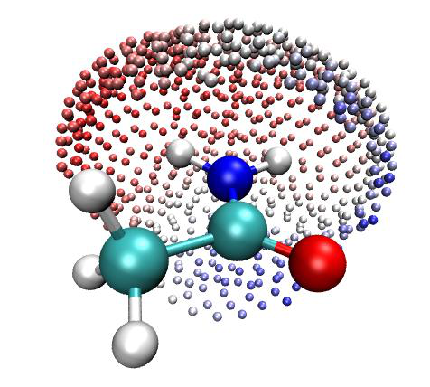
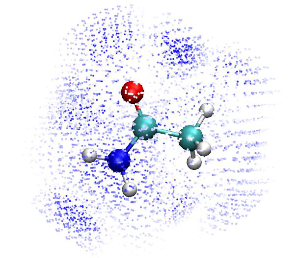
as illustrated eariler).
4.7.9 Calculate PEOE (Gasteiger) charges¶
In this example we calculate PEOE charge (also known as Gasteiger charge) for a typical organic system, dopamine. Reading Section 3.9.17 is recommended to gain basic knowledge about the principle, details and implementation of the PEOE method in Multiwfn.
Since calculation of PEOE charge only requires geometry information, we can use such as .xyz, .pdb, .mol as input file. Boot up Multiwfn and input
Multiwfn session
- examples\dopamine.xyz 7 — Population analysis
- 19 — PEOE (Gasteiger) charge First, the parameters involved in the PEOE calculation are printed:
Determined parameters:
1(O ) numbond= 2 a= 14.180 b= 12.920 c= 1.390
2(O ) numbond= 2 a= 14.180 b= 12.920 c= 1.390
3(N ) numbond= 3 a= 11.540 b= 10.820 c= 1.360
4(C ) numbond= 4 a= 7.980 b= 9.180 c= 1.880
[ignored...]
Then iteration starts
Max cycles: 50 Charge convergence criterion: 0.00010 Damping factor: 0.500
Cycle 1 Maximum change of charges: 0.312435
Cycle 2 Maximum change of charges: 0.039963
[ignored...]
Cycle 10 Maximum change of charges: 0.000062
Convergence succeeded after 10 cycles
Since the formulae involved in the PEOE method are extremely simple, the iteration is finished within one second (this is still true even the system consists of several hundreds of atoms!). Then you can find the PEOE charges:
Atom Charge
1(O ) -0.358163
2(O ) -0.358170
3(N ) -0.330120
4(C ) -0.015405
[ignored...]
4.7.10 Calculate CM5 and 1.2*CM5 charges¶
Calculation of CM5 atomic charges Calculating CM5 charge is quite easy. For example, boot up Multiwfn and input following commands:
examples\oxirane.fchk
Multiwfn session
- 7 — Population analysis and atomic charges
- 16 — CM5 1
Total dipole moment from CM5 charges 0.8110842 a.u.
X/Y/Z of dipole moment from CM5 charges 0.00000 -0.00000 -0.81108 a.u.
Final atomic charges, after normalization to actual number of electrons
Atom 1(C ): -0.07363783
Atom 2(C ): -0.07363783
Atom 3(O ): -0.27339074
Atom 4(H ): 0.10516660
Atom 5(H ): 0.10516660
Atom 6(H ): 0.10516660
Atom 7(H ): 0.10516660
Note that according to original paper of CM5 charge, the dipole moment calculated by CM5 charges can well reproduce experimental dipole moment in gas phase, therefore the dipole moment shown above should be a reasonable estimation of actual gas phase dipole moment of the oxirane.
Calculation of 1.2CM5 atomic charges As demonstrated in J. Phys. Chem. B, 121, 3864 (2017), 1.2CM5 charge is very suitable to be adopted in molecular dynamics simulation with OPLS-AA forcefield for neutral species, namely it can be regarded as a general way of deriving atomic charges when OPLS-AA is to be employed. You can manually multiply the above printed CM5 charges by the factor of 1.2 to obtain the 1.2*CM5 charges, or more conveniently, directly select option -16 in main function 7. Note that in this case, the CM5 charges should be calculated based on the wavefunction produced in vacuum calculation, the enhancement factor of 1.2 is used to account for effective polarization of solute by solvent environment. Since CM5 is not sensitive to calculation level, common DFT functional in combination with 2-zeta basis set is adequate, such as B3LYP/def2-SVP.
In order to maximally simplify the procedure of evaluating 1.2CM5 charges for people who do not have any knowledge of quantum chemistry calculation, a Linux shell script is provided for fully automatically evaluating 1.2CM5 charges by invoking Gaussian and Multiwfn, see examples\scripts\1.2CM5.sh. Using this script is extremely simple. For example, assume that this script and a manually built molecular structure file phenol.xyz has been presented in the current folder, you just need to run ./1.2CM5.sh phenol.xyz, then this script will first invoke Gaussian to optimize the phenol at B3LYP-D3(BJ)/def2-SVP level and yield wavefunction at corresponding level, then Multiwfn will be invoked to calculate CM5 charges, and finally a file named phenol.chg will be automatically yielded in current folder, its last column is just 1.2*CM5 charges. You can also specify net charge and spin multiplicity when running this script. Do not forget to open 1.2CM5.sh to check more information at the beginning of it.
examples\scripts\1.2CM5_ORCA.sh script has identical use as the 1.2CM5.sh script described above, but it invokes ORCA instead of Gaussian. Before using it, please modify content after “ORCA=”, “orca_2mkl=” and “nprocs=” at beginning of the script properly.